Шаг 2 · готовые посты под копипаст
10 постов · готовы под копипаст
Контент для команды
Посты собраны по выводам из вкладки «Аналитика»: человеческий хук в первой строке, обращение к аудитории, конкретные цифры (2200+ резидентов, 7 дней, налог 0%), один CTA, 3–5 хэштегов (конкуренты их не используют). Каждый — в голосе и угле своего участника. Копируй и публикуй.
▶ Асхат — правовая сторона, «red tape» 4 поста
Myth vs realityкарусель
Most founders think the hardest part of moving to Kazakhstan is the paperwork.
It isn't — if you do the steps in the right order.
I've taken founders from their first application to full residency for years, and the ones who stall almost always make the same move: they treat the legal setup as the last thing. It's the first.
Get the order right and a company is registered in about 7 days:
• Confirm your activity qualifies for Astana Hub
• Register the entity (this is the fast part)
• Lock in the tax and visa benefits you're entitled to
• Then build
The paperwork isn't the wall. Doing it out of order is.
Relocating a company this year? Send me a message — I'll share the actual checklist.
How it worksкарусель
Three things decide whether your company gets Astana Hub resident status. Most founders only know the first one.
1. Your activity. It has to be genuine IT/tech work — this part most people get.
2. The structure. How you register matters as much as that you register. The wrong setup costs you benefits later.
3. Compliance. The 0% corporate tax comes with simple rules — follow them and the upside is yours.
Get all three right and you're not just "registered" — you're a resident with the full tax, visa and operational upside.
Not sure if you'd qualify? Tell me what you're building and I'll give it to you straight.
Карусель · 5 слайдов Скачать PDF ↗
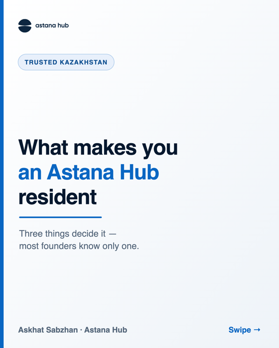
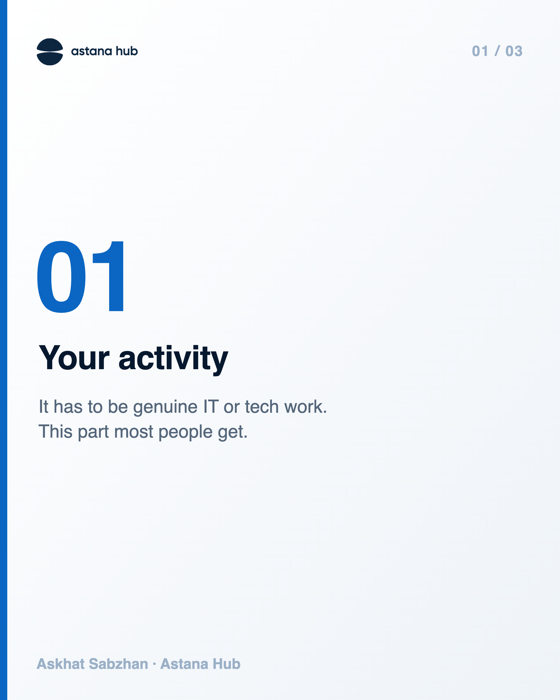
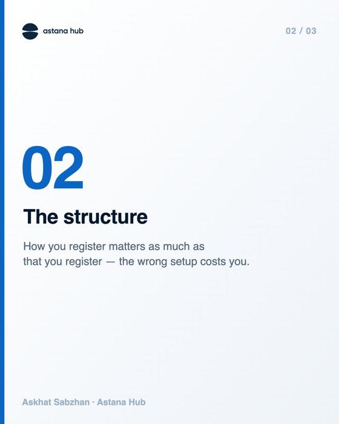
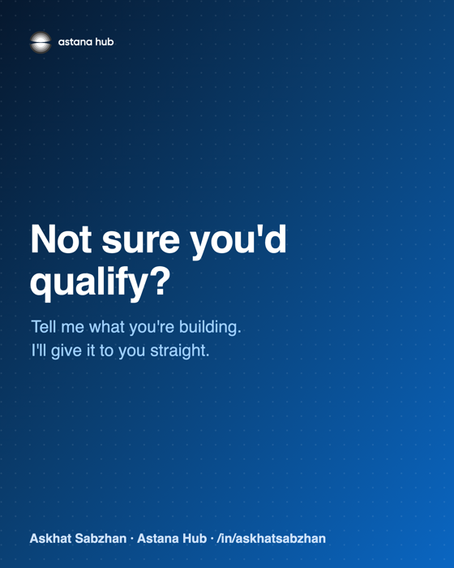
Operator's takeфото + текст
The number one mistake I see founders make when relocating to Kazakhstan:
they leave the legal setup for last.
They sort the flights, the office, the team — and only then ask "so how do we actually register?" By that point they've made choices that box them in.
The legal structure isn't the boring final step. It's the foundation everything else sits on. Done first, it makes the rest fast and cheap. Done last, it makes the rest a rework.
If you're planning a move, start here. Happy to walk through your case.
Myth vs realityкарусель
Dubai or Astana? Founders ask me this every week. Here's the honest comparison — including where Dubai wins.
Dubai wins on brand, lifestyle, and a deep investor pool. If your raise depends on being in that room, that's real.
But on the part I deal with every day — the legal and regulatory setup — Astana is hard to beat:
• Company registered in about 7 days, not weeks waiting on a bank
• 0% corporate tax
• Far lower setup and running costs
• One legal base reaching the CIS, China and South-East Asia
It's not a small ecosystem either: Astana Hub is already home to 2,200+ residents, 450+ of them foreign.
The honest take: Dubai is a great address. Astana is a great operation. Most founders I work with don't need the address — they need to register, stay compliant, and reach the market fast.
Weighing the two? Tell me your setup and I'll give you the unvarnished version.
▶ Нур — операции и Base Camp 3 поста
Base Campкарусель
This August, a group of founders will fly into Astana and leave one month later with a registered company and a foothold in new markets — the CIS, China and South-East Asia.
It's called Base Camp KZ, and here's the plan:
• Company registered in 7 days
• 0% corporate tax
• Workshops on entering the CIS, China and South-East Asia
• Meetings with investors and residents who've done it
• And yes — Astana in August is +25, not +45
You'd be landing into Astana Hub — already home to 2,200+ residents, 450+ of them foreign. We keep the Base Camp group small though: 20–30 people, on purpose, so everyone actually gets set up.
If you've been weighing where to base next, this is the shortcut. Message me and I'll send the details.
Inside the hubкарусель (по дням)
What actually happens in your first 7 days as an Astana Hub participant — not the brochure version:
Day 1–2. We check your activity qualifies and prep the documents. You mostly send us a few files.
Day 3–4. The entity gets registered. This is the part founders expect to take months. It doesn't.
Day 5. Banking and the basics so you can actually operate.
Day 6–7. We walk you through the benefits you now have — tax, visa, what changes.
A week in, you're not "thinking about Kazakhstan." You're running from it.
Curious how it'd look for your case? Drop me a message.
Карусель · 6 слайдов Скачать PDF ↗
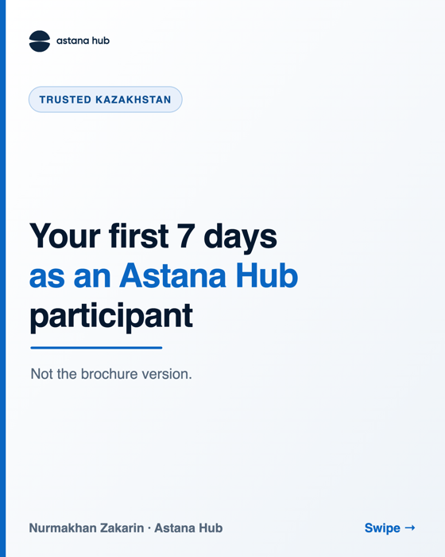
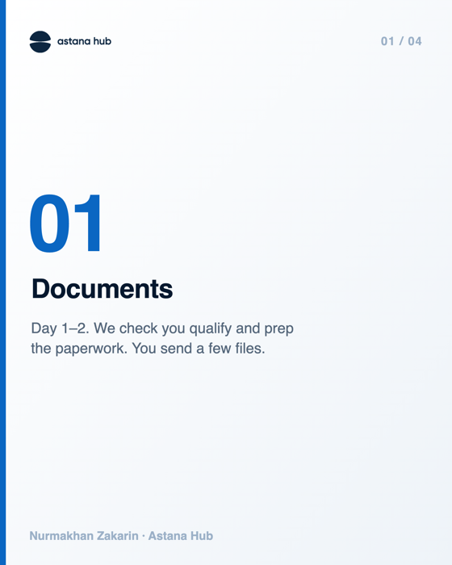
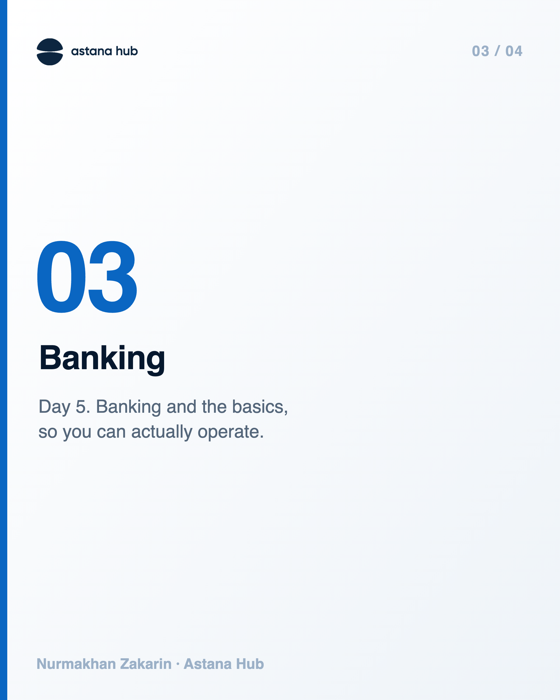
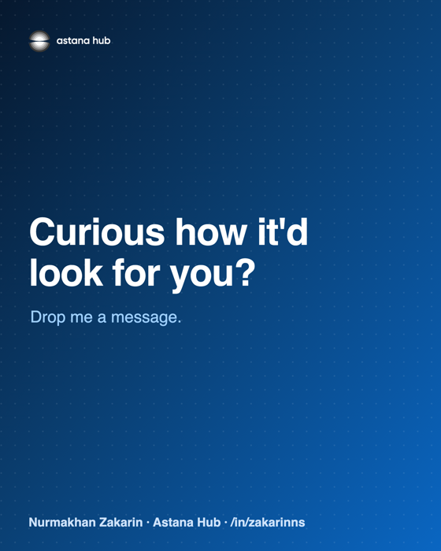
Base Camp · отсчётфото
Two weeks out, and the August Base Camp group is nearly full.
Who's coming so far: founders relocating from Dubai and Cyprus, a couple of small IT teams from the CIS, and a few solo builders who just want a clean base.
What they'll leave Astana with:
• A registered company
• 0% corporate tax
• First meetings with investors and residents
• A real read on the regional markets
We're holding the group at 20–30 on purpose, so everyone actually gets set up. That means the last seats go fast.
If you've been on the fence, now's the time. Message me, or apply through the link in my profile.
▶ Лана — Digital Nomad Residency и истории (флагман) 3 поста
How it worksкарусель
How does an IT specialist actually get Digital Nomad Residency in Kazakhstan?
I review these applications every week, so here are the real steps — no brochure language.
First, the part people overthink: if you're from the CIS or Europe, you come visa-free and go straight for residency. A Digital Nomad visa only matters for passports that need one to enter (say, India or Pakistan). Either way, the goal is the same.
1. Check you qualify. It's built for IT/tech professionals from priority fields.
2. Apply. You send the documents, we moderate and verify.
3. Skills check. A short review and interview — we want to see you're the real thing.
4. The petition. We issue the paperwork for your residence permit.
5. You're in — legal to live and work, with the program's benefits.
Most of it I handle on my side. Your part is a few documents and one conversation.
Thinking about it? Message me and I'll tell you if you'd qualify.
Карусель · 7 слайдов Скачать PDF ↗
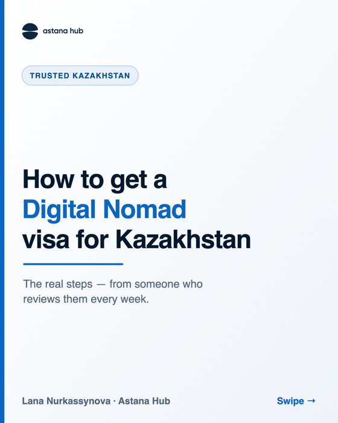
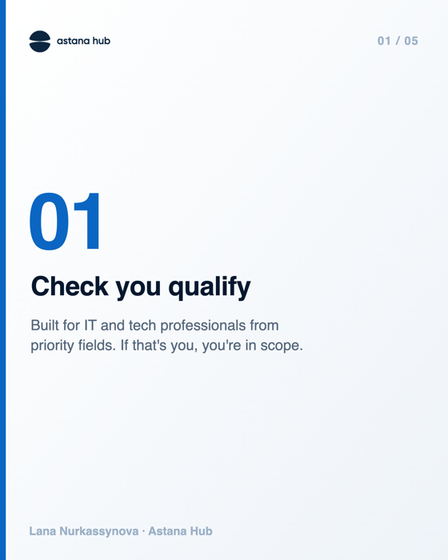
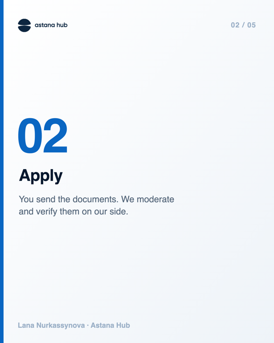
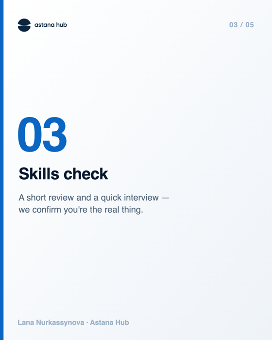
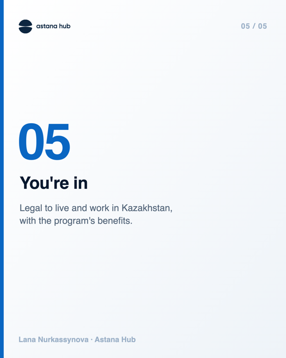
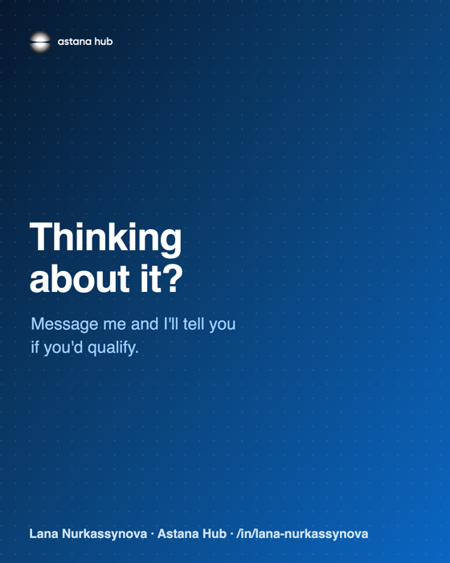
Resident storyфото + текст
Six weeks ago a developer sent me a one-line message: "Is Kazakhstan a real option, or just hype?"
Today his company is registered and his Digital Nomad residency is done.
In between was the part nobody posts about: the questions about taxes, whether his clients abroad would be a problem, how fast banking really is. We went through all of it. No step took as long as he expected.
What changed his mind wasn't a pitch. It was seeing the actual timeline.
If you're sitting on the same question he was — message me. I'll give you the real answer, not the hype.
(Sharing with permission. Details kept light on purpose.)
Operator's takeтекст
I process Digital Nomad Residency applications every week. The thing that surprises founders most:
how little of it is actually about taxes.
Everyone arrives asking about the 0%. Fair — it matters. But the real relief on people's faces comes later, when they realize they can be fully legal, run their business, pay people, and open a bank account without a six-month maze.
The tax break gets you in the door. Being able to actually operate is what makes people stay.
That's the part I help with. If you're weighing a move, ask me the boring questions — those are the ones that decide it.
Язык: посты на английском — под англоязычные профили и международную аудиторию (как у конкурентов). Для таргета на СНГ (Дубай/Кипр) могу сделать русские версии. Заметка: в посте-истории Ланы нужен реальный кейс (страна фаундера, деталь, разрешение на публикацию) — сейчас обезличенный шаблон.